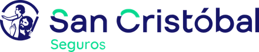
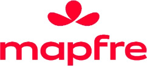
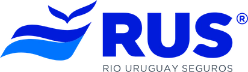

Comparo coberturas de distintas compañías, te explico qué cubre cada póliza y te acompaño cuando más lo necesitás: el día del siniestro.
El productor asesor de seguros es un profesional matriculado e independiente, regulado por la Ley 22.400 y controlado por la SSN.
Pido cotizaciones en varias compañías y te muestro las diferencias reales de cobertura, franquicia y precio.
Sin letra chica: qué cubre, qué no, cuánto tenés que poner vos y cómo se actualiza la suma asegurada.
Armamos la denuncia juntos y hago el seguimiento con la compañía hasta que se resuelve.
Antes de cada vencimiento chequeo que la cobertura y el valor asegurado sigan siendo los correctos.
Tocá cada seguro para ver qué cubre y qué datos necesito para cotizarlo.
Al tener varias compañías, puedo elegir la que mejor responde para cada tipo de riesgo.



Listado de ejemplo: en la versión final aparecen solo las compañías con las que el productor tiene código habilitado.
Completás los datos básicos y se arma el mensaje listo para mandarme por WhatsApp. Te respondo con opciones de varias compañías.
Elegí una opción para continuar.
Guardá esta guía. Y ante la duda, escribime antes de hacer cualquier trámite.
Soy productora asesora de seguros matriculada ante la Superintendencia de Seguros de la Nación. Trabajo con familias, profesionales, comercios y pymes de la provincia, y sé que en Tucumán no es lo mismo asegurar un auto en el centro que en Yerba Buena, ni una finca de limón que un local comercial.
Mi trabajo es que tengas la cobertura justa: ni de más, pagando por algo que no usás, ni de menos, descubriendo el problema el día del siniestro.
Número de demo. Se reemplaza por el del productor.
Dirección del productor · Lunes a viernes de 9 a 13 y de 17 a 20 h.
Email de ejemplo.